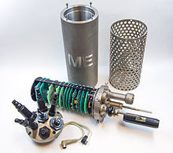
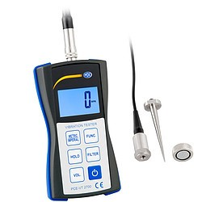
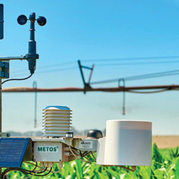
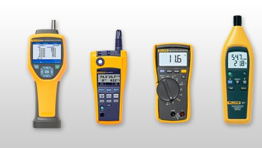

Ambiente
O nosso grande propósito é disponibilizar nesta área soluções sustentáveis para o melhoramento do meio ambiente, fornecendo diversos equipamentos laboratoriais e de campo para Clima (Estacoes Meteorológicas), Qualidade do Ar (Deteção do Ar), Ruido e Vibração (Vibrómetros e Sonómetros), Recursos Naturais (Data Loggers) e Oceanografia (Sondas Oceanográficas) às diversas Universidades, Instituições de ensino e outras entidades ligadas ao meio ambiente, atendendo as normas ambientais nacionais e internacionais.
Áreas de Atuação

Oceanografia
Sondas Oceanográficas para estudos marinhos

Ruido e Vibração
Vibrómetros e Sonómetros para medição de ruído e vibração

Clima
Estações Meteorológicas para monitorização climática

Qualidade do Ar
Equipamentos para deteção e análise da qualidade do ar
Recursos Naturais
Data Loggers para monitorização de recursos naturais